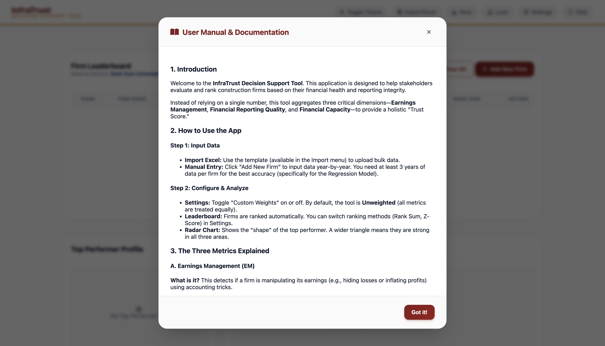
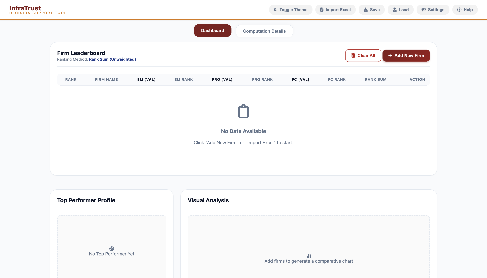
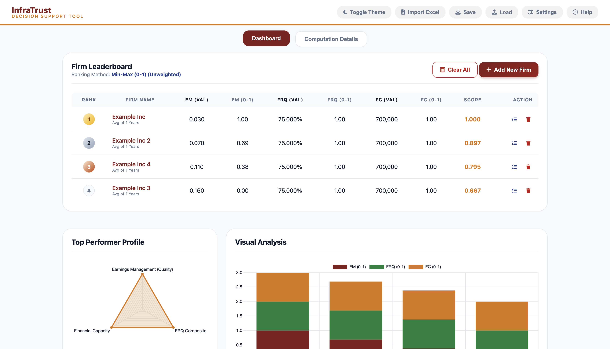

InfraTrust Decision Support Tool
A client-side web application designed to evaluate and rank construction firms by aggregating Earnings Management (EM), Financial Reporting Quality (FRQ), and Financial Capacity (FC) into a holistic Trust Score.
Sample Usage
For visitors analyzing financial data, here is a visual walkthrough of the tool's evaluation workflow.

Step 1: Access comprehensive built-in documentation to understand the holistic Trust Score and methodology.

Step 2: Initialize the dashboard and import bulk financial data via the integrated Excel uploader or manual entry.

Step 3: Review the dynamic Firm Leaderboard, customize metric weights, and analyze top-performer profiles via the visual analysis interface.
The Challenge
Evaluating the trustworthiness of construction firms traditionally relies on surface-level metrics or highly manual spreadsheet analysis. Stakeholders often struggle to see the complete picture, missing critical nuances like subtle earnings manipulation, poor transparency in financial reporting, or weak corporate governance structures.
The client needed an accessible, privacy-first tool that could instantly process raw financial data, perform complex econometric calculations to detect manipulation, and generate an easy-to-understand aggregate ranking—all without requiring a complex backend database or exposing sensitive financial records to external servers.
The Solution
I engineered a fully client-side decision support tool using HTML, CSS, and Vanilla JavaScript. By running all computations directly in the browser, the tool ensures strict data privacy while delivering instant visual insights. The core of the application evaluates firms across three distinct mathematical dimensions:
-
Earnings Management (EM):
To detect financial manipulation, I implemented the
Modified Jones Model
mathematically in JavaScript. I wrote a custom matrix inversion function to run Ordinary Least Squares (OLS) regression directly in the browser. This calculates the Non-Discretionary Accruals (NDA), revealing any hidden Discretionary Accruals (manipulation).
$$NDA = \alpha + \beta_1\left(\frac{1}{A_{t-1}}\right) + \beta_2\left(\frac{\Delta REV - \Delta REC}{A_{t-1}}\right) + \beta_3\left(\frac{PPE}{A_{t-1}}\right)$$
- Financial Reporting Quality (FRQ): A composite metric evaluating transparency. This combines automated time-series neutrality ($R^2$ fit predicting future cash flows), standardized Audit Opinions, and dynamic compliance checklists for IFRS 15 and Corporate Governance.
- Financial Capacity (FC): A straightforward measure of solvency based on Net Worth (Total Assets minus Total Liabilities).
To ensure robust usability, I integrated SheetJS for bulk Excel uploading and built a dynamic scoring engine supporting multiple ranking methodologies: Standard Rank Sum, Min-Max Normalization (0-1), and Z-Score Standardization for handling outliers. I also programmed a "Benchmark Mode" that gracefully degrades the math to industry-standard coefficients if a user inputs data for only a single firm.
The Impact
The resulting application is a highly responsive, standalone evaluation engine. Key impacts include:
- Complete Privacy & Portability: LocalStorage integration and JSON export capabilities allow users to save progress locally without any backend infrastructure.
- Data Transparency: The "Computation Details" tab and integrated "System Debugger" provide line-by-line transparency into every intermediate calculation, building trust in the tool's final rankings.
- Visual Clarity: The integration of Chart.js provides immediate, visual feedback through comparative bar charts and multi-axis radar charts, allowing stakeholders to identify a firm's strengths and weaknesses at a glance.
Want the details?
Happy to walk through the architecture, the math, or the trade-offs.
Start a conversation ↗ ← All projects